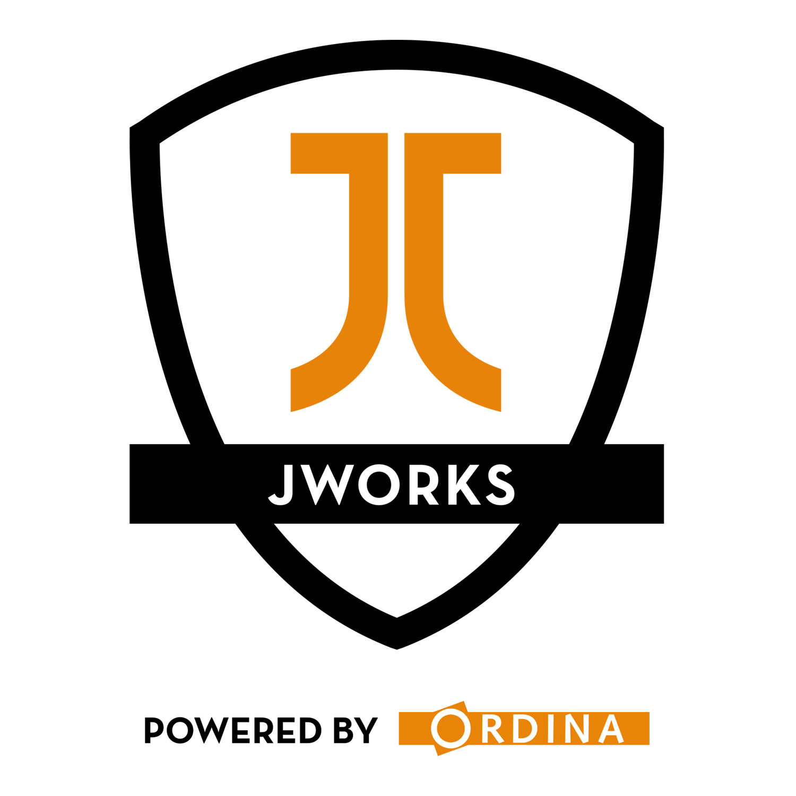
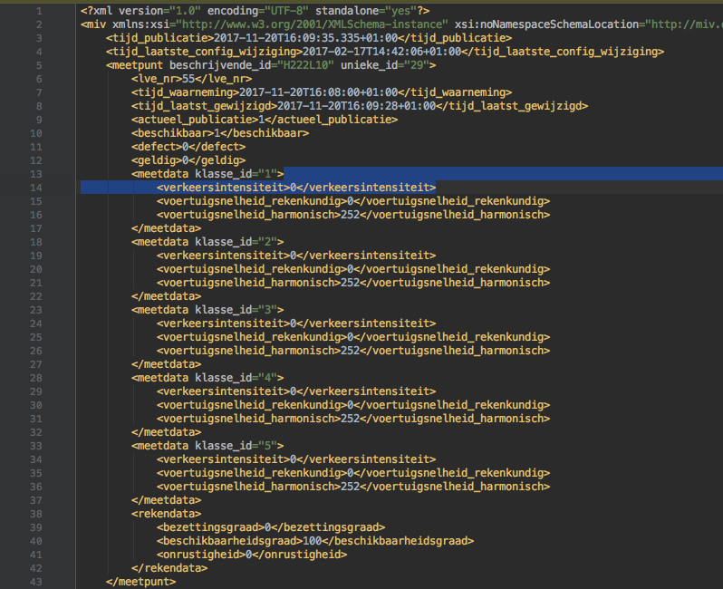
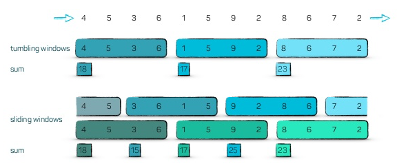
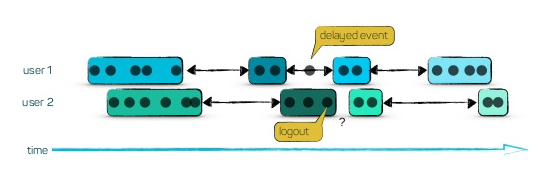
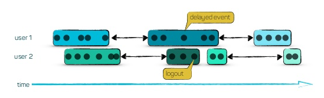

Streaming Traffic
Agenda
- Open Data?
- Spring Cloud Stream: intake and basic processing
- Issues with this Approach
Open Data?
XML
Ingestion
Some code
Stream Operations
Stream Operations
Filter & Transform Group Aggregate Windows
Filter
Transform
Group
Aggregate
COUNT()
SUM()
Windows
Tumbling Windows Sliding Windows Session Windows
Tumbling & Sliding Windows
Session Windows
Session Windows
Triggers
These will trigger the window
Content Triggers

Time Triggers

Count Triggers
Accumulate Results
Discard old results Accumulate all results Accumulate and Retract: both accumulation and retraction
Accumulate Results: example - user monitoring
Discard old results - current load on our system Accumulate all results - total load of the day Accumulate and Retract - total load of the last hour